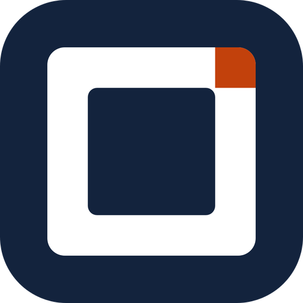
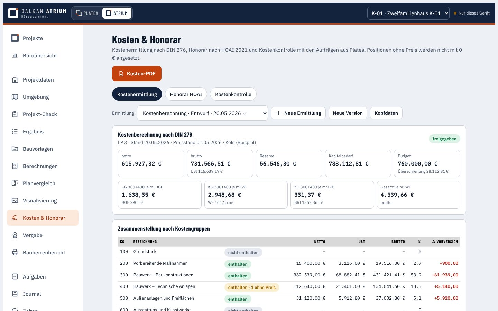

DALKANATRIUM
BÜRO · LPH 1–7OFFICE · STAGES 1–7OFİS · LPH 1–7
Vom ersten Gespräch bis zur Vergabe: Was ist genehmigungsfähig, welche Unterlagen fehlen, was kostet es, wer baut es – und wie viel Zeit steckt drin.From the first meeting to the award: what can be approved, which documents are missing, what it costs, who builds it – and how much time went in.İlk görüşmeden ihaleye: Proje ruhsat alabilir mi, hangi belgeler eksik, maliyeti ne, kim yapacak – ve ne kadar zaman harcandı.
- Büroübersicht aller ProjekteOffice overview of all projectsTüm projelerin ofis özeti
- Projekt-Check & BauvorlagenProject check & permit documentsProje kontrolü & ruhsat belgeleri
- Berechnungen BRI · WF · GRZ/GFZCalculations: volume, area, plot ratiosHesaplar: BRI · konut alanı · GRZ/GFZ
- Umgebung (Lageplan-Grundlage)Surroundings (site context)Çevre (vaziyet planı altlığı)
- PlanvergleichDrawing comparisonPlan karşılaştırma
- VisualisierungVisualisationGörselleştirme
- Kosten DIN 276 & Honorar HOAICosts DIN 276 & fees HOAIDIN 276 maliyet & HOAI ücret
- Ausschreibung & VergabeTendering & awardİhale hazırlığı & ihale
- BauherrenberichtClient reportİşveren raporu
- Aufgaben · Journal · ZeitenTasks · journal · timeGörevler · Journal · Zaman
